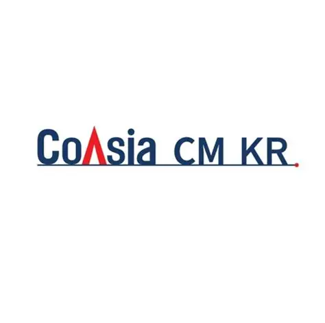
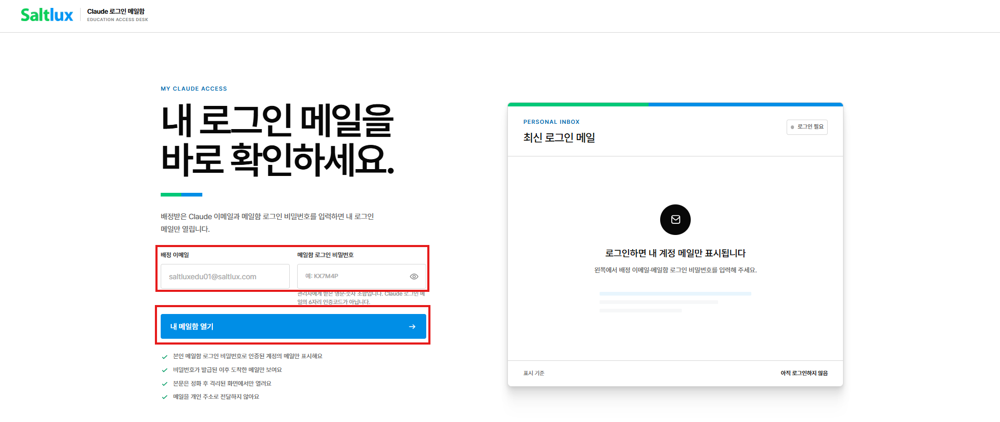
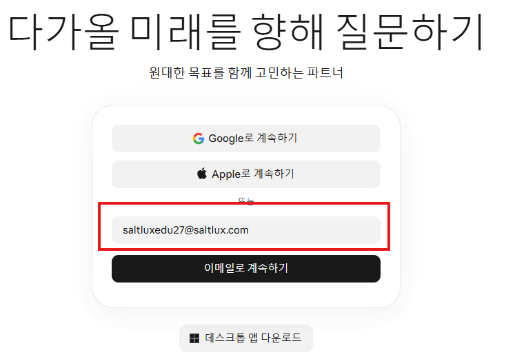
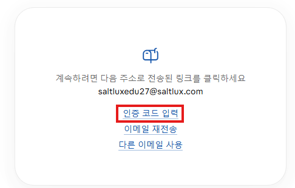
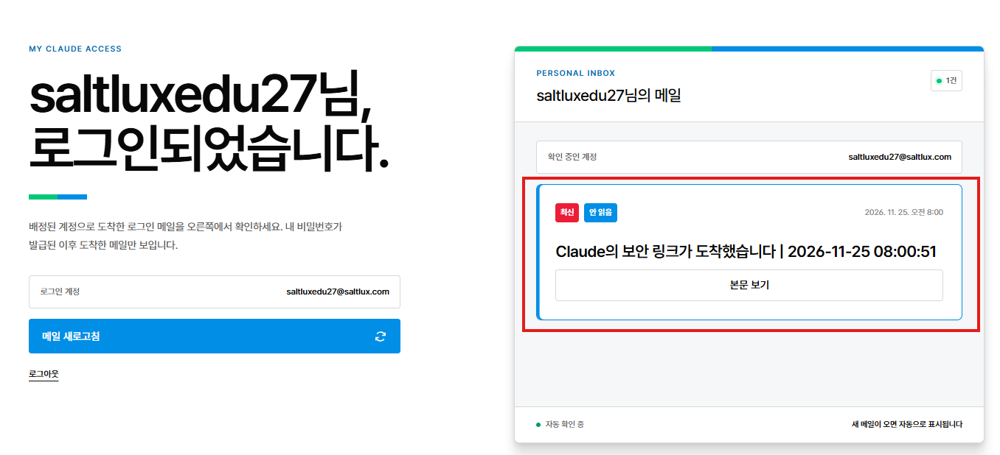
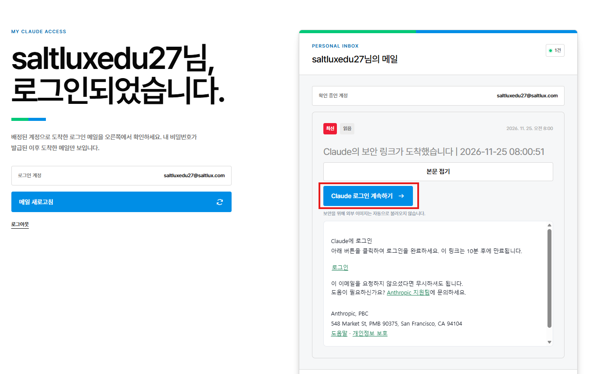
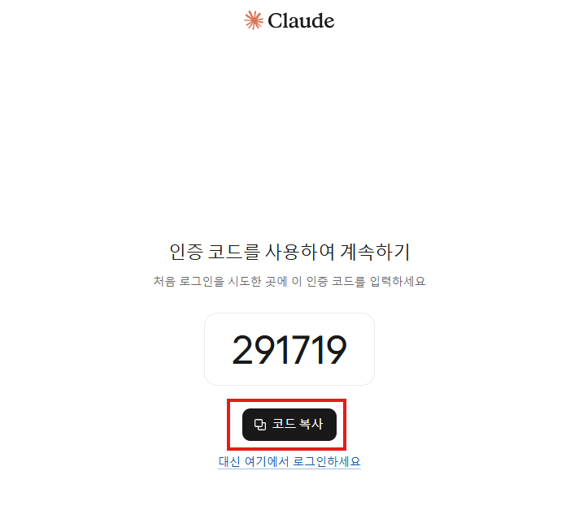
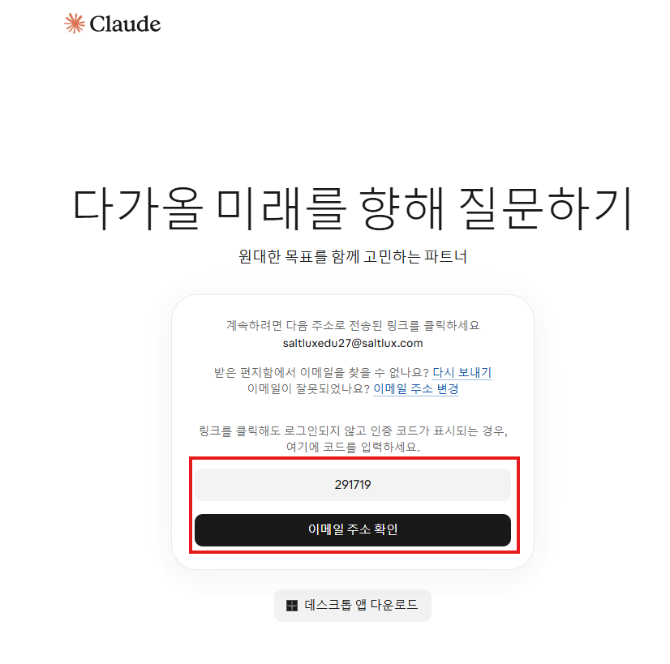

강사님 교육자료
PDF 강의자료를 내려받거나 Notion에서 강의자료를 확인해 주세요.



코아시아세미 · 코아시아넥셀 · 코아시아씨엠코리아 공동교육
CLASS RESOURCES
강의자료를 확인하고, 본인에게 배정된 Claude 실습 계정으로 로그인해 주세요.
PDF 강의자료를 내려받거나 Notion에서 강의자료를 확인해 주세요.
배정된 교육용 유료 계정을 확인해 주세요.
배정표의 메일함 비밀번호는 교육용 메일함을 여는 비밀번호입니다. Claude 로그인에 사용하는 6자리 인증 코드와는 다릅니다.
배정표에서 본인 이름을 찾아 Claude 이메일 계정과 메일함 비밀번호를 확인해 주세요. 아래 로그인 화면의 이메일은 예시이므로, 본인에게 배정된 이메일을 입력해 주세요.







배정 이메일이 맞는지 확인하고, 메일을 다시 요청했다면 가장 최근에 도착한 메일을 사용하세요. 계속 어려우면 현장 운영매니저에게 말씀해 주세요.
자료 열람이나 계정 확인이 어려우면 edu@saltlux.com으로 문의해 주세요.
01 · OVERVIEW
02 · BEFORE CLASS
개인 노트북으로 실습을 진행합니다.
Claude 데스크톱 앱은 아래 공식 페이지에서 확인하실 수 있습니다.
오프라인 교육 참석자에게 솔트룩스 교육용 계정을 제공합니다.
03 · ATTENDANCE
본 교육은 중소기업 인재키움 프리미엄 훈련 과정으로 진행됩니다.
훈련생 본인 참석 확인 및
수기 출석부 서명
환급 절차 진행을 위한
필수 수강 기준
교육 당일 본인 확인 시 제시
04 · CURRICULUM
생성형 AI 기초 활용부터 파일·엑셀 업무자동화, 나만의 웹앱과 대시보드 제작까지
4개 모듈 · 7개 교시 · 09:00–17:00 · 김용승 강사
결과물 · 실습 ①링크로 열리는 화면
결과물이름이 정리된 파일 폴더
결과물 · 실습 ②사전적 페이지 또는 차트가 든 한 장 리포트
결과물차트가 든 엑셀 파일
결과물 · 실습 ③내 기준 한 장 브리핑
결과물 · 실습 ④주소가 있는 내 웹앱
결과물업무 대시보드 · 전시회(서로의 결과물 써 보기)
※ 교육 내용과 세부 일정은 교육 진행 상황에 따라 달라질 수 있습니다.
SURVEY
교육 후 여러분의 소중한 의견을 남겨 주세요.
CoAsia × Saltlux · 2026 교육 운영 안내